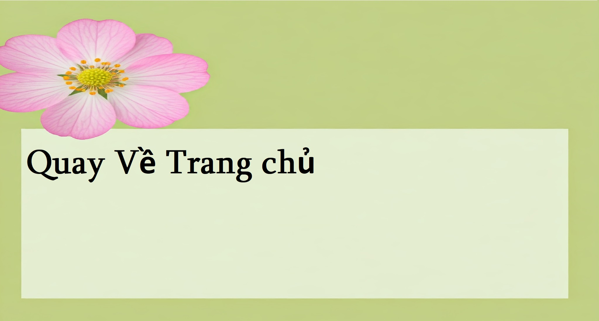

Mục Đích
với việc ta đã biết được định nghĩa cơ bản, ta hay đi sâu vào mục đích của nghành
với nghành kĩ thuật hóa học, dù là công nghiệp hóa chất hay điều chế dầu thô thì luôn muốn đạt được những mục tiêu sau:

- Nâng cao hiệu suất, giảm thiểu chi phí trong sản xuất và tiêu dùng
- Giải quyết các vấn đề môi trường
- Đáp ứng nhu cầu năng lượng qua xử lý dầu thô hay sản xuất pin hóa học
-
cho đến năm 2024, riêng nghành dầu khí và sản xuất cao su thôi đã chiếm đến 11,4% kinh tế quốc tế
còn ở chiều hướng ngược lại,nghành kĩ thuật hoá học đã đạt được vô số thành tựu về bảo vệ môi trường
(giá trị của nghành sản xuất xăm và dầu ở thị trường trung quốc)------------------------------------------------------------------------------------(sản lượng khí nhà kính của 27 nước thành viên liên minh châu âu EU trong 30 năm qua)
Vậy ta có thể thấy nghành kĩ thuật hóa học như thể những nhà giả kim thế kỉ 21:
